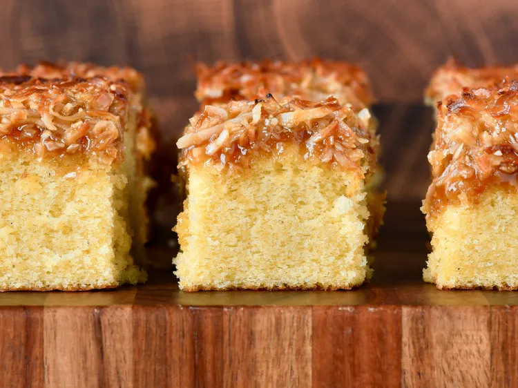

HOME
CAKE

Who says you can’t have cake for breakfast?
This recipe is quick and easy to make, and it’s a great way to start your day on a sweet note.
INGREDIENTS
- 1 cup all-purpose flour
- 1/2 cup granulated sugar
- 1/4 cup unsweetened cocoa powder
- 1 tsp baking powder
- 1/4 tsp salt
- 1/2 cup milk
- 1/4 cup vegetable oil
- 1 large egg
- 1 tsp vanilla extract
Steps
-
Preheat your oven to 350°F (175°C). Grease and flour a 9-inch round cake pan.
-
In a large mixing bowl, whisk together the flour, sugar, cocoa powder, baking powder, and salt.
-
In another bowl, combine the milk, vegetable oil, egg, and vanilla extract. Mix well.
-
Pour the wet ingredients into the dry ingredients and stir until just combined. Do not overmix.
-
Pour the batter into the prepared cake pan and spread it evenly.
-
Bake in the preheated oven for 30-35 minutes, or until a toothpick inserted into the center comes out clean.
-
Remove the cake from the oven and let it cool in the pan for 10 minutes. Then, transfer it to a wire rack to cool completely.
-
Once the cake is completely cool, you can frost it with your favorite frosting or enjoy it plain.
-
Slice and serve. Enjoy your delicious homemade cake!